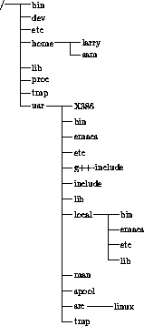

Most UNIX systems have a standard layout for files, so that system resources and programs can be easily located. This layout forms a directory tree, which starts at the ``/'' directory, also known as ``the root directory''. Directly underneath / are some important subdirectories: /bin, /etc, /dev, and /usr, among others. These directories in turn contain other directories which contain system configuration files, programs, and so on.
In particular, each user has a home directory, which is the directory set aside for that user to store his or her files. In the examples above, all of Larry's files (such as cheat-sheet and history-final) were contained in Larry's home directory. Usually, user home directories are contained under /home, and are named for the user who owns that directory. Therefore, Larry's home directory is /home/larry.
In Figure 3.2.8 a sample directory tree is represented. It should give you some idea of how the directory tree on your system is organized.
=1.0pt

Figure 3.1: A typical (abridged) Unix directory tree.